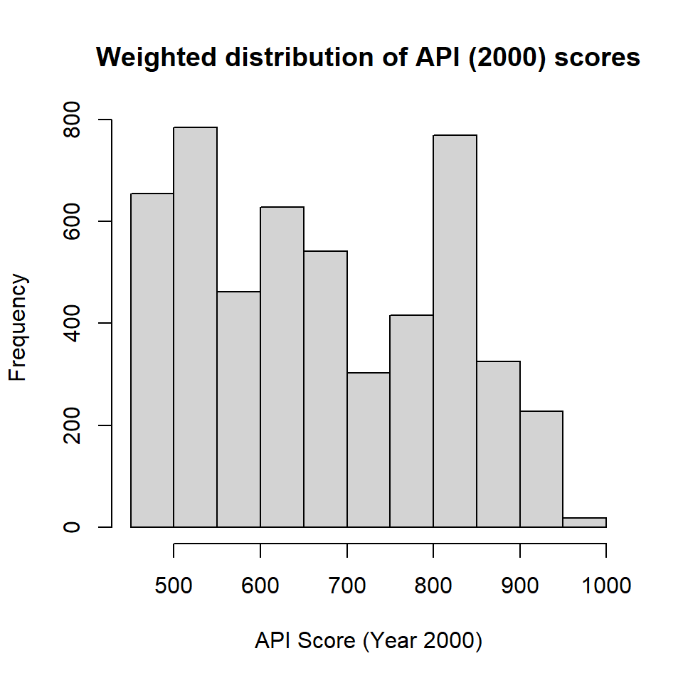
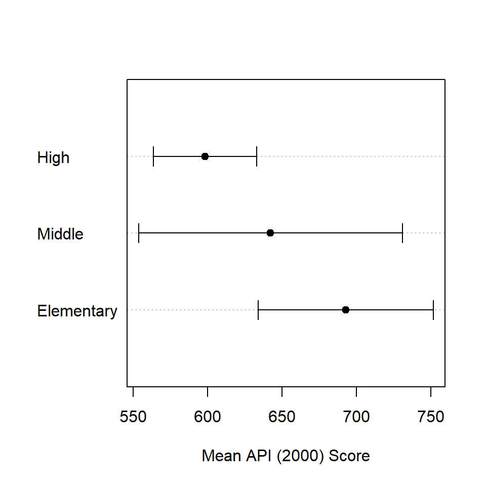

7 Survey Analysis
\(\DeclareMathOperator*{\argmin}{argmin}\) \(\newcommand{\var}{\mathrm{Var}}\) \(\newcommand{\bfa}[2]{{\rm\bf #1}[#2]}\) \(\newcommand{\rma}[2]{{\rm #1}[#2]}\) \(\newcommand{\estm}{\widehat}\)
With the ability to load a survey dataset and specify its survey design we’re now ready to do some analysis.
We’ll use the api dataset which comes with the survey package: it’s a
set of observations of the Academic Performance Index (API) on all
California Schools with at least 100 students in the years 1999 and 2000.
In particular we’ll use the apiclus2 dataset, which is a two stage
cluster sample of 126 schools drawn from the population of 6194.
The top 10 rows of the data set and some of the key variables are shown below.
apiclus2$stype <- factor(apiclus2$stype, levels=c("E","M","H"))
levels(apiclus2$stype) <- c("Elementary","Middle","High")
apiclus2 |>
slice_head(n=10) |>
select(cds, stype, name, dnum, cnum, api99, api00) |>
kbl() |>
kable_styling()| cds | stype | name | dnum | cnum | api99 | api00 |
|---|---|---|---|---|---|---|
| 31667796031017 | Elementary | Alta-Dutch Flat | 15 | 30 | 785 | 821 |
| 55751846054837 | Elementary | Tenaya Elementa | 63 | 54 | 718 | 773 |
| 41688746043517 | Elementary | Panorama Elemen | 83 | 40 | 632 | 600 |
| 41688746043509 | Middle | Lipman Middle | 83 | 40 | 740 | 740 |
| 41688746043491 | Elementary | Brisbane Elemen | 83 | 40 | 711 | 716 |
| 40687266042998 | Elementary | Cayucos Element | 117 | 39 | 779 | 811 |
| 20651936023881 | Elementary | Fuller (Merle L | 132 | 19 | 432 | 472 |
| 20651936023931 | Elementary | Fairmead Elemen | 132 | 19 | 494 | 520 |
| 20651936023907 | Middle | Wilson Elementa | 132 | 19 | 589 | 568 |
| 06615980631259 | High | Colusa High | 152 | 5 | 585 | 591 |
| Variable | Description |
|---|---|
| cds | Unique identifier |
| stype | Elementary/Middle/High School |
| name | School name (15 characters) |
| sname | School name (40 characters) |
| snum | School number |
| dname | District name |
| dnum | District number |
| cname | County name |
| cnum | County number |
| flag | reason for missing data |
| pcttest | percentage of students tested |
| api00 | API in 2000 |
| api99 | API in 1999 |
| target | target for change in API |
| growth | Change in API |
| sch.wide | Met school-wide growth target? |
| comp.imp | Met Comparable Improvement target |
| both | Met both targets |
| awards | Eligible for awards program |
| meals | Percentage of students eligible for subsidized meals |
| ell | ‘English Language Learners’ (percent) |
| yr.rnd | Year-round school |
| mobility | percentage of students for whom this is the first year at the school |
| acs.k3 | average class size years K-3 |
| acs.46 | average class size years 4-6 |
| acs.core | Number of core academic courses |
| pct.resp | percent where parental education level is known |
| not.hsg | percent parents not high-school graduates |
| hsg | percent parents who are high-school graduates |
| some.col | percent parents with some college |
| col.grad | percent parents with college degree |
| grad.sch | percent parents with postgraduate education |
| avg.ed | average parental education level |
| full | percent fully qualified teachers |
| emer | percent teachers with emergency qualifications |
| enroll | number of students enrolled |
| api.stu | number of students tested. |
The apiclus2 dataset was drawn by taking a sample of districts (labelled by district number dnum),
and then a sample of schools within districts (schools are labelled by their school number snum).
The column fpc1 contains the number of districts (757), and the column fpc2 contains the
number of schools in each district (which varies by district).
We can specify this two stage cluster design using
The summary() function tells us the basics of the design we’ve just specified:
## 2 - level Cluster Sampling design
## With (40, 126) clusters.
## svydesign(ids = ~dnum + snum, fpc = ~fpc1 + fpc2, data = apiclus2)
## Probabilities:
## Min. 1st Qu. Median Mean 3rd Qu. Max.
## 0.003669 0.037743 0.052840 0.042390 0.052840 0.052840
## Population size (PSUs): 757
## Data variables:
## [1] "cds" "stype" "name" "sname" "snum" "dname"
## [7] "dnum" "cname" "cnum" "flag" "pcttest" "api00"
## [13] "api99" "target" "growth" "sch.wide" "comp.imp" "both"
## [19] "awards" "meals" "ell" "yr.rnd" "mobility" "acs.k3"
## [25] "acs.46" "acs.core" "pct.resp" "not.hsg" "hsg" "some.col"
## [31] "col.grad" "grad.sch" "avg.ed" "full" "emer" "enroll"
## [37] "api.stu" "pw" "fpc1" "fpc2"We can see that from the summary that \(n=40\) districts were sampled (out of \(N=757\)). Let’s count the number of schools sampled per district. We’ll just display the top 15 largest districts:
apiclus2 |>
group_by(dnum,dname) |>
summarise(Mi=first(fpc2),mi=n()) |>
ungroup() |>
arrange(desc(Mi)) |>
slice_head(n=15) |>
kbl(col.names=c("dnum","District Name","$M_i$","$m_i$"),escape=FALSE) |>
kable_styling(full_width=FALSE)| dnum | District Name | \(M_i\) | \(m_i\) |
|---|---|---|---|
| 620 | Sacramento City Unified | 72 | 5 |
| 570 | Pomona Unified | 36 | 5 |
| 575 | Poway Unified | 28 | 5 |
| 638 | San Lorenzo Unified | 14 | 5 |
| 200 | El Centro Elementary | 11 | 5 |
| 731 | Sylvan Union Elementary | 9 | 5 |
| 596 | Rincon Valley Union Elem | 7 | 5 |
| 639 | San Lorenzo Valley Unif | 7 | 5 |
| 781 | Walnut Creek Elementary | 6 | 5 |
| 295 | Healdsburg Unified | 5 | 5 |
| 403 | Los Gatos Union Elem | 5 | 5 |
| 480 | Natomas Unified | 5 | 5 |
| 534 | Palo Verde Unified | 5 | 5 |
| 549 | Piedmont City Unified | 5 | 5 |
| 173 | Del Mar Union Elementary | 4 | 4 |
After the 10 largest districts a census of schools is taken in each selected district \(m_i=M_i\)
7.1 Continous variables
Consider the key outcome variable `api00``, the API score in the year 2000 for each school.
Display
The basic workhorse for the display of numerical variables is the histogram
svyhist(~api00, design=apiclus2.des, prob=FALSE,
xlab="API Score (Year 2000)",
main="Weighted distribution of API (2000) scores")
Figure 7.1: Weighted histogram of API (2000) scores
Note that this histogram differs strongly from the simple histogram of the sample values:
hist(apiclus2$api00,
xlab="API Score (Year 2000)",
main="Unweighted distribution of API (2000) scores")Figure 7.2: Unweighted histogram of API (2000) sample data
a warning to us that with survey data we can go badly astray if we ignore the sample design.
Boxplots are an alternative to histograms:

Figure 7.3: Distribution of API (2000) sample data
… especially if we want to display variables divided by a category:
svyboxplot(api00~stype, design=apiclus2.des,
xlab="School Type",
ylab="API (2000)", main="API (2000) Scores")
Figure 7.4: Distribution of API (2000) sample data
If we have two continuous variables we can plot them as a scatterplot, showing the weights of each observation:

Figure 7.5: Distribution of API scores in 1999 and 2000
Estimation
We’ve already seen that we can estimate means using the svymean() function.
## mean SE
## api00 670.81 30.099We can do this for a set of separate variables, using a perhaps uninintuitive notation:
## mean SE
## api99 645.03 29.711
## api00 670.81 30.099or for a variable split by categories by wrapping svymean() up inside a call to svyby()
## stype api00 se
## Elementary Elementary 692.8104 29.92660
## Middle Middle 642.3520 45.09132
## High High 598.3407 17.69417If we want to test hypotheses about differences between groups one way is to use the regression framework
##
## Call:
## svyglm(formula = api00 ~ stype, design = apiclus2.des)
##
## Survey design:
## svydesign(ids = ~dnum + snum, fpc = ~fpc1 + fpc2, data = apiclus2)
##
## Coefficients:
## Estimate Std. Error t value Pr(>|t|)
## (Intercept) 692.81 29.93 23.150 < 2e-16 ***
## stypeMiddle -50.46 25.30 -1.994 0.05354 .
## stypeHigh -94.47 28.21 -3.348 0.00188 **
## ---
## Signif. codes: 0 '***' 0.001 '**' 0.01 '*' 0.05 '.' 0.1 ' ' 1
##
## (Dispersion parameter for gaussian family taken to be 17528.44)
##
## Number of Fisher Scoring iterations: 2Here we can see that with Elementary as the reference level we
get the same estimate of the mean API reported as the (Intercept).
We further see that there is no significant difference between Middle
and Elementary Schools in mean API, but the mean API is significantly lower
at High Schools compared to Elementary Schools.
Regressions take of course take lots of variables into account, and we can apply familiar regression techniques to investigating conditional associations between predictors and a continuous outcome.
A dotchart is a nice way of showing the estimated means and their confidence intervals:
ss <- svyby(~api00, by=~stype, svymean, design=apiclus2.des)
sc <- confint(ss)
ns <- nrow(sc)
dotchart(ss, xlim=range(sc), xlab="Mean API (2000) Score")
arrows(sc[,1], 1:ns, sc[,2], 1:ns, angle=90, code=3, length=0.1)
Figure 7.6: Mean API (2000) scores by School Type
We can estimate totals using the svytotal() function - for example
we can estimate the total number of students enrolled at all schools in
California:
## total SE
## enroll 2639273 799638Although note that we have had to remove some schools with unknown
enroll values by stating na.rm=TRUE, and these forced removals likely mean
that our estimate of the total is an underestimate.
Confidence intervals can be calculated using the confint() function
## 2.5 % 97.5 %
## api99 586.8009 703.2670
## api00 611.8188 729.8048## 2.5 % 97.5 %
## Elementary 634.1553 751.4655
## Middle 553.9746 730.7294
## High 563.6607 633.0206The standard errors can be directly extracted using SE()
## [1] 29.92660 45.09132 17.69417The relative standard errors, also known as relative sampling errors
(RSEs) can be extracted by cv():
## Elementary Middle High
## 0.04319595 0.07019721 0.02957206RSEs are a useful measure of quality of estimates of quantities that are strictly positive, such as the API score.
If we learned that the SE of an estimate (e.g. the mean of api00) was
30.1 we wouldn’t be able to assess whether it
was a good estimate or not without knowing that the value of the estimate
was 670.81. A good way to assess the quality of
an estimate is the SE of an estimate \(\widehat{T}\) as a proportion of
the estimate \(\widehat{T}\):
\[
\bfa{RSE}{\widehat{T}} = \frac{\bfa{SE}{\widehat{T}}}{\widehat{T}}
\]
For overall mean api00 the RSE is
\[
\bfa{RSE}{\widehat{\bar{Y}}}
= \frac{30.1}{670.81}
= 0.04
\]
This is a highly precise estimate: the SE is only 4.5%
of the value of the estimate.
Good RSEs are only a few percent at most. Poor RSEs are larger than 10%, and anything bigger than 20% isn’t really publishable.
In general a standard deviation divided by a mean goes by the term
coefficient of variation (CV), which is why the R function is
called cv().
## api00
## api00 0.044869567.2 Categorical Variables
Estimation
Categorical variables give proportions svymean() svytotal() svyciprop() for better confidence intervals
Inference
svychisq() svytest() svyranktest() svyglm() regTermTest() svypredmeans()
Display
barplot()
Data display and inference
Analytic and jackknife methods
- SRSWOR, SRSWR
- Stratified designs
- Cluster designs
- PPSWR
- Complex designs